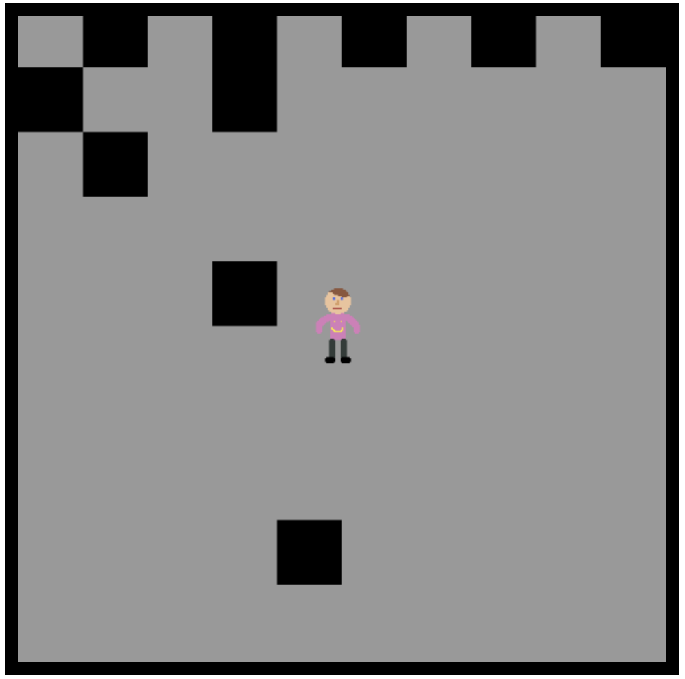

Blog
This Blog is Catch-All! This will be detailing my ongoing projects in Computer Science! Updated Weekly!
1/9/18
Today I did a bunch of research on how to actually go about creating the game, and looking at other examples of games that I can learn from. I have decided to use JS, and it seems to be working out okay as of right now. At home I did a little bit of coding, and have the basics of my world set up. I created a tile map, with a large 2D array, and a loop to determine which block is which. I was originally going to use a picture, but I figured this would be an easier way for me to make wall collisions. I am currently struggling with the viewmodel, and cannot seem to figure out how to make a camera class, and if that is even the right approach. I'm unsure if I should use a camera, or move the environment around the player. That has yet to be determined. I also made some test sprite imagery, very bad pixel art, but it will do for know until quinn makes me some of his world famous pixel art. Anyways, I'm off to figure out more of this.
1/19/18
Today I messed with the movement code to try to make the camera view model good, unfortunately I have come to the conclusion that I need to completely rewrite the movement code because it sucks hard. I have the movement down pretty well otherwise, but the view model is still giving me loads of trouble. I've included a picture of what it looks like so far. Still have a ways to go!
